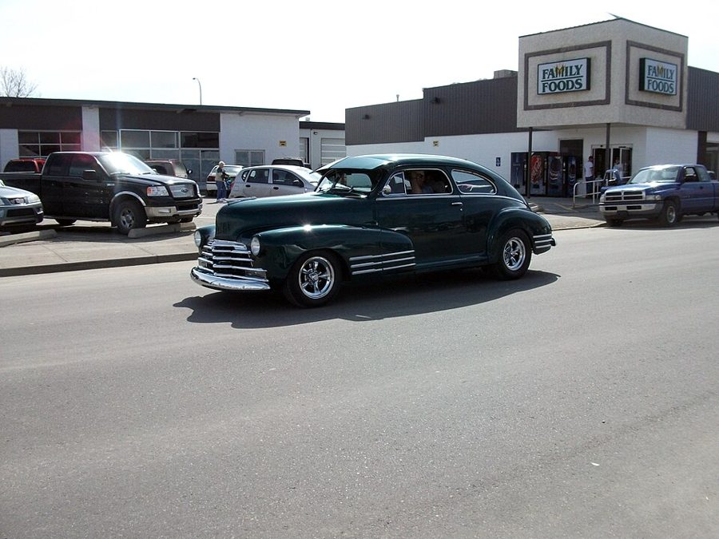
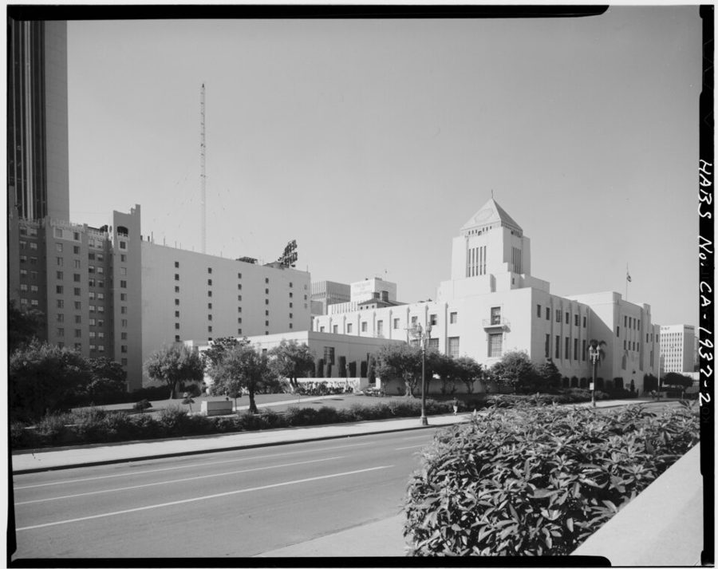
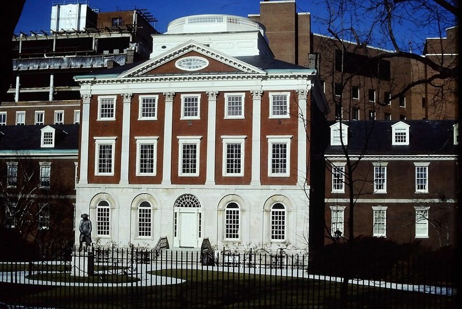
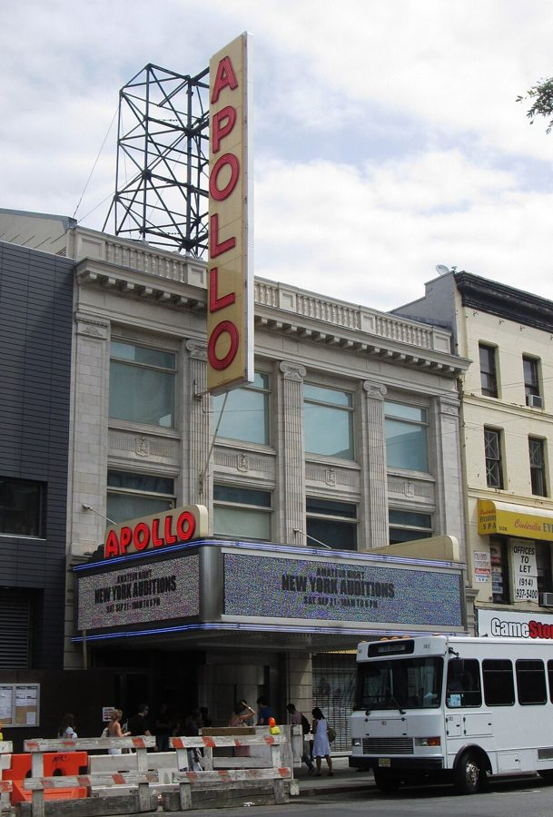

这一页在做什么
高中毕业到入伍的五年，十八到二十三岁，他自己的说法是「漂着」：布店、洛杉矶的社区学院、费城的出租车，来回换。读的时候抓两条线。一条是身边几个人怎么把他往正路上拉：母亲不肯为他作保，继父教他借来的东西要还得和原来一样好，甚至更好，Louise 劝他回去受审，还有后来成了妻子的 Connie。另一条是一次顶撞警察：几项罪名怎么来的、判了什么，留下了一份以后要向雇主解释的案底。

一辆 1947 年的雪佛兰 Fleetline，车顶一路斜到车尾，这种造型叫 fastback（溜背）。§1 第 7 段：他攒了约五个月，用 350 美元左右现款买下一辆灰色的 1947 年雪佛兰溜背车。照片里这辆是 2010 年在加拿大街头拍的，和作者无关。dave_7 from Lethbridge, Canada，CC BY 2.0，维基共享资源 读之前：这一页在他一生的哪里
上一页停在 1954 年 1 月高中毕业，3 月他坐长途车去洛杉矶看父亲，住了两个月。这一页从他回到费城接上，写到 1959 年初接到征兵通知。这几年美国在战后的好光景里，工作不难找，汽车进了普通人家。1954 年最高法院在布朗案里判公立学校的种族隔离违宪，南方的民权运动正在起步。
读的时候带着这几个问题。不用先找答案，读完回来对照「检查一下理解」。
他说这几年是在 drifting。读的时候数一数：哪些人和事把他往前推了一把，哪些差点让他走偏？§1
在洛杉矶城市学院，他「生平第一次」喜欢上念书。和高中时的他比，变的是什么？§2
被捕那一段，哪些是他亲眼看到的，哪些是事后听说的，哪些是他的猜测？§4
Connie 家的穷和他家的穷有什么不一样？他为什么总对她说要去洛杉矶？§5
分节地图
这一页是原书第 2 章全部五节（章首没有小标题，本站记作 §1）。粗体是这一节的地标；斜体是英文这一节开头的几个词，在 Kindle 里搜它就能跳到那里，错字照电子书原样。读完打个勾。
布店的折布机，一辆现款买的车约 1100 词 A VERY ENJOYABLE TRIP TO CALIFORNIA … 留意母亲不肯作保之后他怎么做；继父和布店老板各给了他一句话。 洛杉矶城市学院，和父亲闹翻约 500 词 My father and I drove back … 他第一次爱上念书。第 17 段当面问父亲为什么抛下他们。 开出租车，对面小餐馆里的 Connie约 900 词 Shortly after I returned to … 出租车夜班的门道，挣多少钱；第 26 段那张写着电话号码的纸条。 Pine 街上的警察，逃去洛杉矶又回来约 900 词 Going to Los Angeles at that … 罪名怎么来的是作者的说法；留意他怎么评价自己那几句话。 和 Connie 交往，派对上又被抓走约 1100 词 After my return to Philadelphia, I … Connie 家的穷；拘留所里的一夜；最后一句是征兵通知。
费城
洛杉矶
Penn 布店，约一年半
开出租
回来受审
约 1955：现款买车
1958 年 2 月认识 Connie，3 月被捕
1959 年 2 月开庭
1959 年初：征兵通知
1954
1955
1956
1957
1958
1959
1954 春看父亲（上一页）
LACC
1956 秋 – 1957 春，全日制
1958 年 5 月底去，约一个月后回
本站示意图：这一页的五年在两座城市之间来回（箭头是搬走或回来）。年份书里写明的照写；买车只说「快满十九岁」，按他生于 1936 年推算约在 1955 年；布店的起止书里没给年份，他只说干了约一年半。 出场的人
按出场顺序。书里的家人和朋友只写书里说的；公众人物写生卒年。
Leonard Shaw 作者最好的朋友 第 4 段：这几年下班后常和他一起混。不是上一页出生的外甥 Leonard。
Mom 作者的母亲，第 1 章出过场 第 6 段：不肯为他的车贷作保。他买了车以后，她第一次要靠他跑腿、带她去买东西。第 36 段改嫁；第 48 段给他和 Connie 立了规矩。
Thomas Burchett 继父，作者叫他 Pops，第 1 章出过场 第 11 段以「后来的继父」出场，陆军费城军需仓库的高级技工，教他修车，也教他做人。第 36 段写出名字：母亲青梅竹马的恋人，这时和母亲结了婚。
Penn 的一位老板 犹太商人，书里没写名字 第 14 段：作者和另一位老板吵了架要辞职，这位他很喜欢的老板问他找好下一份工没有，劝他先找好再走。
父亲 书里没写名字，第 1 章出过场 第 14–17 段：请他去洛杉矶住、上大学，两人一起开车过去。父亲这时已第三次结婚。作者当面质问他为什么抛下母子三人，父子从此处不下去。
Louise Bobo 父亲第二任妻子 Claire 的妹妹 第 18 段：他搬出父亲家，Claire 和 Louise 收留了他。第 34 段：他逃到洛杉矶，又住到 Louise 家，是她劝他回去受审。两姐妹第 1 章出过场。
Sammy 作者在洛杉矶喜欢上的姑娘 第 19 段出场，比他大三四岁。他回费城前送了她一枚友谊戒指，后来她把戒指寄了回来（第 21 段）。
Connie Taylor 作者后来的妻子 第 25 段出场，那时在和出租车司机朋友 Charles 约会。比作者大三岁，十个孩子里最小的，小时候吃过真正的苦（第 39–40 段）。
Leah Connie 的姐姐 第 28 段：和 Connie 住在一起。第 49 段：她比 Connie 更相信他真会去洛杉矶。
Tate 和 Alexander 费城市议员，公众人物 第 33 段：他被捕后去求助，两人都说帮不上。书里只写了姓；当时市议会里有议长 James Tate（1910–1983，后来当了市长）和黑人律师 Raymond Pace Alexander（1897–1974），多半就是这两位。
Eugene Ormandy 1899–1985，指挥家，公众人物 1936 年进费城交响乐团，1938 到 1980 年任音乐总监。第 41 段：作者和 Connie 去公园听他指挥的露天音乐会。
Bones Connie 一个姐姐的丈夫 第 44 段：大个子，把闯进门的警察揪着领子扔了出去。第 46 段在拘留所里先冲隔壁的白人喊了一句骂人的话。
背景：作者默认你知道的事
按在书里出现的顺序排，标题前是节号。这里只讲事情本身，作者怎么看放在后面几节。
§1 宾州的酒：州营酒铺和 blue laws禁酒令结束时，宾夕法尼亚州 1933 年底设了酒类管制局，1934 年起烈酒和葡萄酒由州政府开的专卖店（state store）卖，今天仍以州营店为主。1935 年起买酒要满 21 岁，所以第 4 段这几个十八九岁的小伙子要守在店门口，花一块钱请大人代买。blue laws 是限制星期天经商和娱乐的老法规，源自守安息日的宗教传统；第 24 段作者说，因为它，酒吧在午夜前后就得关门，想接着喝只能去地下酒吧（见词条）。
§1 陆军费城军需仓库第 11 段，后来的继父是这里的高级技工。它的前身是 1800 年设的 Schuylkill 兵工厂，一百多年里给美军做军装和旗帜；一战后迁到南费城的新厂区，1926 年起叫费城军需仓库（Quartermaster Depot，quartermaster 是军队里管粮秣被服的军需官），二战时又扩建了服装厂。五十年代它仍是军队被服的采购和生产中心，1965 年并入国防部新设的人员保障中心。
§2 洛杉矶城市学院：两年制的公立学院
洛杉矶公共图书馆的中央馆，1971 年美国历史建筑调查（HABS）拍摄。§2 第 15 段：差不多每个星期六上午，他都在市中心这座图书馆念书，有时一待一整天。Marvin Rand（HABS），公有领域，维基共享资源 Los Angeles City College（LACC）在洛杉矶的 Vermont 大道，1929 年 UCLA 的前身搬走以后，在旧校园上开办，原名 Los Angeles Junior College，1938 年改名。这类两年制公立学院当时叫 junior college，今天叫 community college（社区学院）：入学门槛低，读完可以拿两年制学位，也可以转进四年制大学。加州的社区学院直到八十年代中期都不收学费，只收少量杂费。第 15 段说每学期 12 美元、「highly subsidized」，就是这种情况；今天收多少，见「对照今天」。
§3 几个数字：学费和出租车的收入第 20 段：他想接着念大学，可费城的大学学费将近 2000 美元，他付不起，只在 Temple 大学的夜校上了两门课。和洛杉矶的每学期 12 美元一比，就知道他为什么一直惦记着回加州。出租车司机那时不拿固定工资，收入是车费的提成（commission）加小费；第 22 段他「猜」每月至少 400 美元，并换算成写书时的钱，这个换算对不对见「对照今天」。夜班分下午 4 点到半夜、半夜到早上 8 点两班，等活在路边的出租车候客点（taxi stand），调度靠电线杆或墙上的出租车电话（第 23 段）。
§4 三项罪名、治安法庭和保释
宾夕法尼亚医院 Pine 街一侧的老楼（中楼建于 1802–1805 年），1990 年前后拍摄。医院 1751 年由 Benjamin Franklin 和 Thomas Bond 创办，是美国最早的医院。§4 第 32 段：作者说下体被警察用膝盖顶伤，被送到附近这家医院急诊，没查出伤。Bmzuckerman，CC BY 4.0，维基共享资源
罪名 中文 什么时候加上的（作者说） 1959 年 2 月的判决 disorderly conduct 妨害治安 当晚登记入案 有罪 resisting arrest 拒捕 他从医院回来才发现 无罪 assault and battery on a police officer 袭警 同上 有罪
assault 本指作势要打人，battery 指真的动了手，美国法律里常连起来说。Magistrates' Court 是费城当时的治安法庭，管轻案和被捕后的第一次聆讯、定保释金；1968 年宾州修宪后撤销，由今天的费城市立法院取代。bail bond 是保释金：交了就放人，按时出庭会退，跑了就没收，人也成了逃犯（第 34 段的 fugitive）。felony 指重罪，美国一般把可判一年以上监禁的罪叫 felony，比 misdemeanor（轻罪）重；作者说自己被诬告的是重罪（第 33 段），书里没写是哪一项。罪名为什么加上去、为什么判得轻，都是作者的一面之词和猜测。
§5 Robin Hood Dell 和 Apollo 剧院
哈莱姆 125 街的 Apollo 剧院，2013 年拍摄，门口灯箱写着业余之夜的纽约海选。§5 第 42 段：他和 Connie 常开车去纽约，白天逛博物馆，晚上来这里看演出。Beyond My Ken，CC BY-SA 4.0，维基共享资源 Robin Hood Dell 是费城 Fairmount 公园里的露天音乐场，1930 年开张，夏天由费城交响乐团演出。五十年代在市政府和私人捐款的支持下，整个夏季的音乐会都免费，前后送出的票据估计有六百万张；第 41 段说票要写信去要。Apollo 剧院在纽约哈莱姆的 125 街，是美国最有名的黑人演出场所之一，1934 年开始的星期三业余之夜至今还在办。第 42 段他们把车停在 1950 年启用的港务局巴士总站一带。
§5 征兵通知第 50 段最后一句：1959 年初，他接到通知，自己就要被征召入伍（drafted）。朝鲜战争 1953 年停火以后，美国在和平时期也一直征兵，适龄男子轮到了就得去，不由自己挑时间。他怎么入伍、被派到哪里，是下一页的事。
词与短语
你用 Kindle，单个生词长按就能查，这里只收词典帮不上的：每个词都认识、合起来不懂的说法，口语和俚语，那个年代的说法，反话。斜体小字是原句里连续的几个词，错字照电子书原样，搜它就能跳到那里。点「记下」收进词本。
§1 布店的折布机，一辆现款买的车
dry goods
… a job at Penn Dry Goods, a …
布匹、纺织品
不是「干货」。美国的旧说法，指布料、成衣一类，和五金、食品相对。Penn Dry Goods 是店名，紧接着他自己说是布匹批发商。
double folding and rolling machine
… operate a double folding and rolling machine …
对折卷布机
第 2 段他讲了怎么用：整卷的宽幅布对折，再卷到纸板上，成一匹匹的小卷。
bolt
… form and rolled into a bolt; …
（布的）一匹
熟词生义，不是「螺栓」，也不是「闪电」。
treat someone to
… the bosses would treat us to delicatessen food …
请某人吃
treat 在这里是「请客」。delicatessen 是卖熟肉、三明治的熟食店。
shoot crap
… co-workers would shoot crap as they …
掷骰子赌钱
crap 在这里是 craps，一种掷两颗骰子的赌博，和粗话里那个词无关。
bet on the side
… but I'd bet on the side …
在旁边跟着押注
自己不掷骰子，押别人这一把的输赢。
drifting
… consisted of drifting and incertitude as …
漂着，没有方向
本章章名 Rudderless and Drifting：船没了舵，随水漂。incertitude 是 uncertainty 的书面说法。
state liquor store
… outside a state liquor store waiting …
州营酒铺
见「背景」。
give someone a lecture
… she gave me a lecture about drinking …
把某人训了一顿
lecture 在这里不是「讲座」。
co-sign
… my mother could co-sign in order …
（在贷款合同上）联署担保
他还年轻，车行要一个有收入的人一起签字，他还不上就由担保人还。
inspire financial confidence
… I didn't inspire that much financial confidence …
让人在钱的事上放心
自嘲：回头看，当时的自己确实不像能按月还钱的人。
purchase outright
… $350 to purchase outright a …
一次付清买下
outright 是「彻底、当场」，买东西时指不分期、不欠账。
fastback
… a gray,1947 Chevrolet fastback …
溜背式（轿车）
车顶从前往后一条弧线滑到车尾，见本页开头的照片。gray 后面的逗号连着年份，是扫描丢了空格。
not long on praise
… Mom wasn't long on praise; she …
不轻易夸人
be long on 是「富于、多的是」，反过来 short on 是「缺」。
the man of the house
… more like the man of the house …
家里当家的男人
父亲不在，他有了车，母亲开始靠他办事，他才觉得自己像个顶门立户的人。
stepfather-to-be
… closer to my stepfather-to-be …
后来的继父
-to-be 表示「未来的」，如 bride-to-be（准新娘）。他和母亲到第 36 段才结婚。
Quartermaster Depot
… the army's Philadelphia Quartermaster Depot …
（陆军）军需仓库
见「背景」。
a welcomed borrower
… always be a welcomed borrower …
人家乐意再借给你的人
继父的道理：借来的东西还得比借时还好，下次再借，人家就不会犹豫。
someone else's floor to spit on
… make sure you have someone else's floor …
（先找好）下一个干活的地方
话糙理不糙：要吐痰，先找好别人家的地板。老板的意思是辞职前先找好下家。作者说这又是从犹太商人那里学到的一课。
§2 洛杉矶城市学院，和父亲闹翻
highly subsidized
… benefiting from a highly subsidized full-time …
政府大量补贴的
见「背景」和「对照今天」。
Superior Court
… Los Angeles County Superior Court, watching …
洛杉矶县高等法院（初审法院）
名字里有 Superior，但在加州它是审一般民事、刑事案件的初审法院，不是上诉法院。他去旁听刑事审判，那时想学法律。
precipitate
… Precipitating some of them was a …
引发，促成
不是化学里的「沉淀」。这句是倒装：引发父子矛盾的，是他当面质问父亲。
have no bearing on
… should have had no bearing on his …
和……无关，不该影响
他的理：和母亲处不来，不等于可以不养两个孩子。
friendship ring
… Just before leaving, I gave Sammy a …
友谊戒指
原文 friendship 在引号里，紧跟这几个词后面。比订婚戒指轻，表示两人的情意。
§3 开出租车，对面小餐馆里的 Connie
dismissed
… I wasn't dismissed-but I didn't …
（被学校）勒令退学
他说学校没开除他，是他自己下学期没再去。
be intimate with
… hadn't yet been truly intimate with any …
（委婉）和人发生过性关系
他坦白说，和别的小伙子聊天时会吹嘘这方面的经历，并猜别人也一样。
the ins and outs
… learned the ins and outs of it …
门道，里里外外的细节
in today's dollars
… in today's dollars, but a substantial …
按今天的币值
only 是说换算成今天的钱不算多；but 后面才是重点：当时是一大笔钱。换算对不对，见「对照今天」。
after-hours joints and speakeasies
… after-hours joints and speakeasies, or prostitutes …
打烊后还营业的地下酒吧
speakeasy 原指 1920 年代禁酒令时的非法酒吧，据说进门要压低声音说话（speak easy）。乘客想找赌场、地下酒吧、妓女，他都知道门路，所以小费多。
might be deemed suicidal
… today might be deemed suicidal …
简直是找死
夸张说法：那时的夜班司机敢在车里打盹，今天这样做就太危险了。
blue laws
… Bars closed around midnight because of …
限制星期天营业的老法规
原文 blue laws 在引号里，紧跟这几个词后面。见「背景」。
fare
… a fare got into Charles' taxi …
乘客
熟词生义：fare 本是车费，出租车司机用它指付车费的客人。
turn in
… end and turn in our taxis …
交（车）
下班把车开回车行交掉，不是「上床睡觉」的 turn in。
hit it off
… we hit it off quite well …
一见投缘，聊得来
be taken with
… she was quite taken with the works …
迷上了
不是被动的「被拿走」。Kahlil Gibran（1883–1931）是黎巴嫩裔美国诗人，《先知》（The Prophet，1923）的作者。
respectable girls did not call guys
… girls did not call guys …
正经姑娘不主动给男的打电话
原文 respectable 加了引号。那时的规矩是男方主动；他留下电话号码让 Connie 打给他，Connie 多年后说当时觉得他很自大。
homosexuals
… the dancing of two homosexuals …
同性恋者
那时的通行说法。今天把 homosexual 当名词用显得生硬，带病理色彩，一般说 gay。
§4 Pine 街上的警察，逃去洛杉矶又回来
disorderly conduct
… charged with disorderly conduct, resisting arrest …
妨害治安
三项罪名和判决见「背景」里的表。
as a taxpayer, I paid him
… as a taxpayer, I paid him to …
我是纳税人，是我花钱雇的他
美国人跟警察、官员顶嘴时的老话：你的工资是我交的税。作者后来承认这是 mouthing off。
who in the hell do you think you are talking to
… who in the hell did I think …
你以为你在跟谁说话
意思是「你算老几，敢这么跟我说话」。in the hell 只加重语气。
be on one's way
… he'd better be on his way lest …
赶紧走人
警察警告乘客别掺和，不然就告他妨碍警察执行公务（interfering with a policeman）。
booked for
… subsequently booked for disorderly conduct …
以……的罪名登记入案
book 在警察局是登记、立案（记名字、拍照、按指纹），不是「预订」。
post a bail bond
… released upon posting a …
交保释金
post 在这里是「交（钱）」。屏幕上的 $50o 是 $500。
mouth off
… indiscreet in mouthing off to the …
顶嘴，出言不逊
indiscreet 是「不慎、冒失」。往轻里说的认错。
police record
… I had no prior police record …
案底，犯罪记录
第 38 段：这次之后他就有了案底，以后要一次次向雇主解释。
hold a parking spot
… holding a parking spot for a …
占车位
他事后才听说：警察站在路中间，是在给同事占车位，那位同事正把私家车逆着车流往后倒。
more-than-friendly kiss
… our first more-than-friendly-kiss was …
超出朋友的吻
连字符把一串词粘成一个形容词，口气俏皮。这是临别的吻。
not think much of
… I didn't think much of her advice …
不以为然，看不上
day in court
… My day in court finally arrived …
开庭受审的日子
day in court 也常指「得到在法庭上申辩的机会」。
count
… two of the three counts …
（起诉中的）一项罪名
不是「计数」。三项罪名判了两项有罪。
face the music
… go back home and face the music …
面对后果，接受惩罚
§5 和 Connie 交往，派对上又被抓走
going together
… was called going together …
（两人）正式交往
他自己解释了：就是 steady dating，固定约会、确定了关系。
junk man
… intermittently as a junk man, truck …
收破烂的
同一句的 stevedore 是码头装卸工。intermittently 是「时有时无」：Connie 的父亲干这几样活都不稳定。
go without meals
… She actually went without meals …
饿着，吃不上饭
go without 是「缺了……也只好过」。actually 强调：这是真挨过饿，不是说说。
pillar to post
… the common phrase ran …
东奔西走，居无定所
原文 living pillar to post 在引号里，紧挨在这几个词前面。一般说 from pillar to post。ran 在这里是「（俗话）这么说」。
worldly
… seemingly worldly and three years older …
见过世面的
不是「世俗的、俗气的」。seemingly 是「看上去」。
turnpike and tunnel tolls
… for the turnpike and tunnel tolls …
收费公路和隧道的通行费
turnpike 是收费高速公路。他们把回程过路费先放在手套箱里，剩下的钱就能放心花。
Port of Authority Terminal
… New York Port of Authority Terminal …
纽约港务局巴士总站
正式名字是 Port Authority Bus Terminal，1950 年启用，在曼哈顿 40 街和 41 街之间。书里多写了一个 of。
barge through
… the police simply barged through the unlocked …
闯进来
barge 本是平底驳船，动词指横冲直撞。simply 是「就这么、招呼都不打」。
paddy wagon
… several squad cars and a paddy wagon …
囚车
squad car 是巡逻警车。paddy 是对爱尔兰人的旧称，带贬义；常见的说法是当年的警察多是爱尔兰人，来历没有定论。
disorderly house
… charged with frequenting a disorderly house …
不正经的场所
法律用语，指妓院、赌场或吵闹扰邻的地方；frequent 作动词是「常去」。他才到半小时，说「常去」更显得罪名笼统。
racial epithets
… an exchange of racial epithets between …
骂对方种族的蔑称
epithet 在这里不是「称号」，是骂人的绰号。Bones 先冲隔壁的白人喊了一个黑人骂白人的词，两边对骂到睡着。作者说这一夜很好玩，是真心话，不是反讽。
dressed to the nines
… to the nines-who Connie's brother had …
穿得极讲究
屏幕上前面的 guydressed 粘在了一起。这位就是 Connie 的哥哥带来、想追 Connie 的人，只有他不觉得好玩。
take your company home
… take your company home at a …
把你的客人送回家
company 在这里是「来访的人、陪你的人」，不是「公司」。母亲的话：不能在像样的钟点把客人送回家，就别往家里带。
Jackie Gleason music
… listening to Jackie Gleason music on …
Jackie Gleason 的情调轻音乐
Jackie Gleason 是电视喜剧明星，也出了一批弦乐轻音乐唱片，如 1952 年的 Music for Lovers Only，适合约会时放。
big talk
… that was just big talk …
说大话
Connie 听别的男人也这么说过，所以不信他。
have a lot on the ball
… I had much more on the ball than …
脑子好使，有本事
口语。他拿自己和在洛杉矶见过的富裕黑人比：他们能发达，他也能。
be drafted
… notice that I was going to be drafted …
被征召入伍
draft 在这里是征兵，不是「草稿」。见「背景」最后一块。
读不通的扫描错字：
… located at loth and Filbert Streets … 应为 10th（第 10 街）。… never lost over $zo or so … 应为 $20。… parked on iith Street, just … 应为 11th Street。… $40o a month-only about $2, 60o in … 应为 $400 和 $2,600。… battery on a police office … 应为 officer（警察）。… posting a $50o bail bond … 应为 $500。… since the early z95os … 应为 1950s。… Whenever Connie was, there was Walter … 多半是 Wherever：她在哪，Walter 就在哪。… sister's house on loth and French Street … 应为 10th。… except the guydressed to the nines-who … 应为 guy—dressed to the nines—who，两处破折号。
对照今天
书里能拿今天的数据检验的几个说法。每张卡的标签判的是标题里那句「书里的说法」；「今天」一栏的数字都联网核过，写了核对日期和依据。
成立 后来的数据和研究支持这个说法部分成立 一部分对，一部分要打折扣被改写 后来的事实推翻了它，或者完全变了样有争议 研究者至今看法不一书里的说法：洛杉矶城市学院全日制每学期 12 美元，是政府大量补贴的
书里 作者说他 1956 年秋入学，全日制学费每学期 12 美元，「highly subsidized」（§2 第 15 段）；回费城后，当地大学将近 2000 美元的学费他付不起（§3 第 20 段）。
当时（1956） 加州的两年制公立学院对本州学生不收学费，只收少量杂费，1960 年的《加州高等教育总体规划》延续了这条原则。按消费物价指数，1956 年的 12 美元约合今天的 140 美元。
今天 加州社区学院 1984 年前后开始按学分收费，今天每学分 46 美元，全日制一学期至少 12 个学分，就是 552 美元起。家境困难的学生可申请 California College Promise Grant 免掉，近一半的学生享受这项减免。核对于 2026-10。依据：Los Rios 社区学院区学费页（2026 年秋季）；加州众议院高等教育委员会 2025 年的法案分析；加州参议院预算小组 2016 年关于社区学院收费历史的材料。
书里的说法：1958 年每月 400 美元，只合今天的 2600 美元左右
书里 作者说记不清开出租车挣多少，猜每月至少 400 美元，换成写书时的钱「只有」约 2600 美元，但当时是一大笔（§3 第 22 段）。
当时（1958） 美国城市消费物价指数（CPI-U，1982–84 年 = 100）的 1958 年平均值是 28.9。
今天 按这个指数，1958 年的 400 美元约合 2010 年的 3000 美元（2010 年平均 218.1），比书里的 2600 美元多一成多；约合 2025 年的 4460 美元（2025 年平均 321.9）。量级对，数字偏低。400 美元本身是他猜的，偏差不影响「当时是一大笔钱」这个意思。核对于 2026-10。依据：美国劳工统计局 CPI-U 全美城市平均年度指数（序列 CUUR0000SA0）。
值得停下来的句子
the car was my message to her that I didn't need her help: I could do for myself.— §1 第 9 段。本站译：这辆车是我给她的一个信号：我不需要她帮忙，我能自己顾自己。
母亲不肯为车贷作保，他就自己攒钱付现。message 这个词用得准：求了几天没用，他不再求，车停在窗下就是回答。这一段写的是赌气，也写出了他后来一辈子的口气：靠自己，不靠别人担保。不过前面第 6 段他也承认，回头看母亲多半是对的。
I was surely indiscreet in mouthing off to the policeman, but being charged falsely with a felony was quite a shock.— §4 第 33 段。本站译：我冲那个警察顶嘴，确实是冒失了；可被诬告犯了重罪，还是让我大吃一惊。
一句话分两半：前一半认错，用的是 indiscreet、mouthing off 这种往轻里说的词；后一半才是他要说的。surely 和 quite 都是作者的分寸：错，他认；诬告，他不认。罪名是不是诬告，书里只有他这一面的说法。
检查一下理解
先在心里答，再点开。答错的那题，回书里把对应那一节再读一遍。
1.（§1）母亲为什么不肯为他的车贷作保？他后来怎么买到了车？ 他说那时的自己不让人放心，母亲又从不赊账、看不起欠债的人。他就额外找活干、周末去当球童，攒了约五个月，用 350 美元左右现款买下一辆旧车。
2.（§1）继父让他把借来的工具洗干净再还，工具借来时本来就脏。继父的理由是什么？ 借东西要还得和借来时一样好，或者更好，这样你下次再借，人家总是欢迎。
3.（§2）他为什么搬出父亲家？ 他当面质问父亲为什么抛下母子三人。父亲说和母亲处不来，他不接受：处不来不该影响养孩子的责任。之后在父亲家过得很不愉快，就搬去和 Claire、Louise 住。
4.（§3）only about $2,600 in today’s dollars 里的 only 是什么意思？ 换算成写书时的钱，这个数不算多；但后半句说当时是一大笔钱。only 是给今天的读者打个比方，不是嫌少。
5.（§4）照作者的说法，另外两项罪名是怎么来的？那个警察为什么站在路中间？ 他从医院回来才发现被加控拒捕和袭警，他认为是给警察留后路，免得他投诉警察打人。警察站在路中间，是在给一个正逆行倒车的同事占车位，这是他后来才知道的。
6.（§4）他为什么跑去洛杉矶，又为什么回来？ 他怕坐牢，想去洛杉矶重新开始。Louise 说这样他就成了逃犯，被抓到后果更糟，劝他回去受审；他想了一个月左右听了她的，对 Connie 的感情也起了很大作用。
7.（§5）第二次进拘留所，罪名是什么？结果如何？ 警察闯进 Connie 姐姐家的派对，以「出入不正经场所」把在场的男人都带走了。第二天早上全部放出来，没有起诉。
用一句话说这一页，写给一个没读过的人。
读完想一想
想一想：他说那几项罪名是加出来的，可他还是回去受审，留下了一份案底，后来还因此丢过一份银行的兼职。换了你，会回去吗？
几种看法 作者至今感激 Louise 劝他回去，说结果总的来说是好的，虽然案底以后得一次次向雇主解释（§4 第 38 段）。社会学家 Devah Pager 2003 年发表的密尔沃基求职实验显示了案底的分量：条件相同的白人求职者，有犯罪记录的被回电比例是 17%，没有的是 34%；黑人求职者是 5% 和 14%。也有人会说，当逃犯的代价更大：一辈子躲着，什么正经工作都找不了。
想一想：从高中毕业到入伍，他换了几份工、去了一次加州、读了一年社区学院，自己说这是「漂着」。你觉得这五年是浪费，还是在为后来攒东西？
几种看法 作者自己用 drifting 和 incertitude 形容这几年，但也写了这几年学会了修车、第一次爱上念书、认识了 Connie。劳动经济学家 Robert Topel 和 Michael Ward 1992 年的研究发现，美国年轻男性入职头十年平均换七份工作，换工作带来的加薪占早期工资增长的至少三分之一：年轻时换来换去是常态，也是找位置的过程。另一种看法是，没有学历、没有方向，一次冲动就可能把路走窄，他自己就差一点成了逃犯。
精彩回顾
读过又忘了，从这里想起来。挑的是这一页最值得记住的人、场面和说法，不按原书顺序；每条后面是节号，想细看就回书里那一节。全书各页的这一节都收在全书回顾 。
一句话： 漂了五年：布店、加州的社区学院、费城的出租车；一次顶撞警察留下了案底，也是这几年遇上了 Connie。
窗下那辆灰色雪佛兰 母亲不肯作保，他攒了五个月钱付现买车，叫母亲到窗口看：那是我的车。
§1 借来的工具要洗干净再还 继父的一课：借来的东西要还得和原来一样好，或者更好，下次人家还愿意借给你。
§1 12 美元一学期 在洛杉矶城市学院，他第一次喜欢上念书：星期六泡图书馆，学期论文学期过半就交。
§2 一张写着电话的纸条 出租车行对面的小餐馆里，他把号码留给 Connie，让她打给他。那年头正经姑娘不主动打电话，她还是打了。
§3 给同事占车位的警察 他嫌警察挡路，喊了一句「我是纳税人」，结果被控三项罪名。逃到洛杉矶一个月，又听 Louise 的话回来受审。
§4 隔着栏杆对骂到睡着 派对上的男人被警察全部带走，牢里两边隔着栏杆用种族的蔑称对骂到睡着，只有那位来追 Connie 的人不觉得好玩。
§5